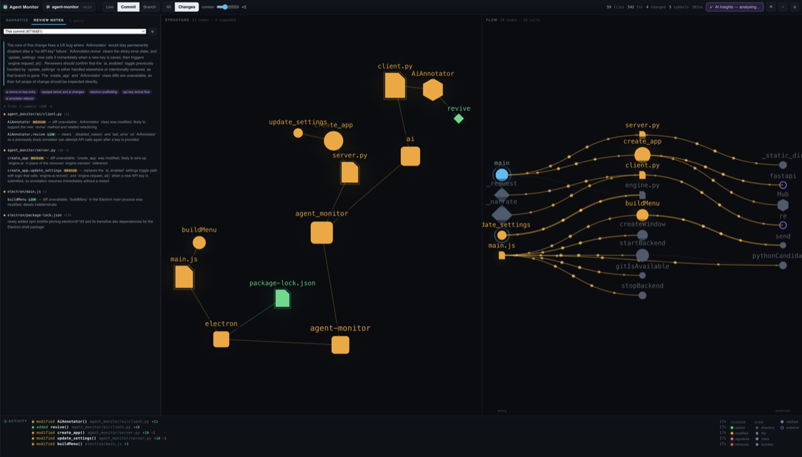

Live agent visualization · Commit review · AI commentary
Watch your agent work.
An AI agent rewriting your codebase looks like scrolling text in a terminal. Agent Monitor shows you what it's actually doing — every file, class, and function it touches, lighting up live.
Apple Silicon · signed & notarized
Linux: snap install agentmonitor
Animated visualization of a code graph: nodes for directories, files, classes, and functions light up and pulse as an AI agent modifies, adds, and removes them.
Live monitoring
See the agent, not the scrollback.
A dozen files change per agent turn, and all you get is text rushing past. Agent Monitor runs beside your agent's terminal and answers the question the scrollback can't: what part of the system is it touching?
Changed symbols pulse the moment they land. Only the latest change animates, and the rest of the graph dims around it for a beat — so your eye goes exactly where the work is happening. When nothing is changing, nothing moves.
A call-flow graph: an entry point on the left fans out through project functions to external packages, with particles flowing along the call edges and a modified function pulsing amber.
Commit & PR review
Review the shape of a change, not a wall of diff.
Point it at your uncommitted work, a commit, or this branch against the one you'll merge into. AI dives into the actual code and compiles per-file review notes with risk levels — a one-line synopsis for every changed symbol, ready before you open the PR.
A diff shows you text. This shows you which APIs broke, what's new, what's gone, and how risky each piece is.
rescan() — now invalidates the symbol cache before re-walking, fixing stale results after a branch switch.
parse(source, lang) — signature changed: gained a lang parameter. Callers in 3 files updated; external callers will break.
class Cache — new LRU cache keyed by AST hash; replaces the removed to_json() serialization path.
Pictures + prose
Pictures and prose, side by side.
Colour and motion tell you where; the narrative tells you what and why. A pink double-pulse means an API broke — and the note beside it names the parameter that changed and who calls it.
Symbol identity is a hash of the AST, not the source text — so a formatter pass lights up nothing, and a docstring edit counts. The graph never cries wolf.
PyParser.symbols() gained a lang parameter — an API-breaking change. Its two in-repo callers were updated in the same pass; the new hash() method backs the cache added in model.py.
A class node with four method nodes: one pulsing pink for a signature change, one emerald for newly added — next to the AI's written explanation of that exact change.
AI augmentation
An AI reviewer that never looks away.
While the agent works, a second AI narrates: a streamed play-by-play of what the agent appears to be doing, where each entry describes only what changed since the last one. Watching Claude stops being boring the moment someone is explaining the game.
- one batched request per changeset
- cached per symbol
- key never reaches the frontend
- fully functional without a key
The real thing
Three panes. One picture of the work.
Narrative and review notes on the left. Structure in the middle — repository to functions, changes lit up. Call flow on the right, entry points to external packages. It replaces the graphical bits of a modern IDE with the one view an agent workflow actually needs.

Get started
Running in a minute.
Download the app
Native macOS app — no Python, no Node, nothing to install.
Download for macOSApple Silicon. Signed and notarized by Apple — opens like any Mac app.
Install on Linux
From the Snap Store. Ships its own git — nothing else to install.
Strictly confined — opens repositories under your home directory and on removable media.
Run from source
Python 3.10+ and git. Native window via Electron, or add --browser.
No agent handy? python tools/simulate_agent.py /tmp/demo-repo plays a scripted editing session you can watch.